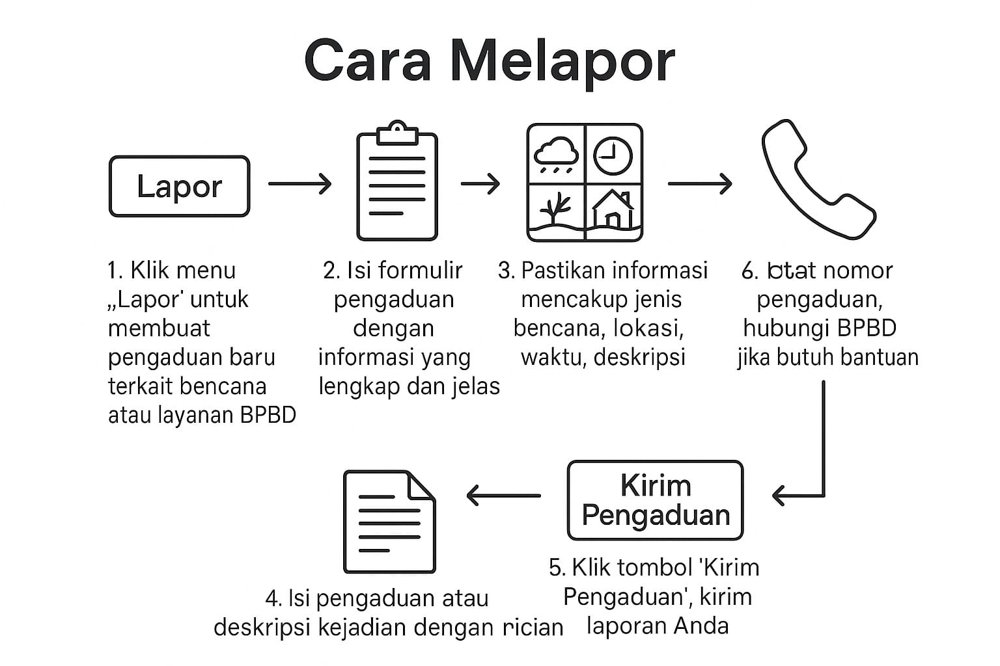

Cara Melapor

-
Klik menu "Lapor" untuk membuat pengaduan baru terkait bencana atau layanan BPBD.
-
Isi formulir pengaduan dengan informasi yang lengkap dan jelas.
-
Pastikan informasi yang Anda masukkan mencakup hal berikut:
- Jenis bencana atau kejadian (misalnya, banjir, kebakaran, tanah longsor, dll.).
- Lokasi kejadian (alamat lengkap atau koordinat jika memungkinkan).
- Waktu kejadian.
- Deskripsi singkat tentang situasi atau kerusakan yang terjadi. -
Isi pengaduan atau deskripsi kejadian dengan lebih rinci, seperti jenis bencana, lokasi kejadian, waktu kejadian, dan dampak yang terjadi untuk membantu proses verifikasi.
-
Setelah selesai mengisi formulir, klik tombol "Kirim Pengaduan" untuk mengirim laporan Anda.
-
Catat nomor pengaduan yang diberikan setelah laporan dikirim. Nomor ini dapat digunakan untuk memeriksa status pengaduan Anda.
-
Jika Anda membutuhkan bantuan lebih lanjut, silakan hubungi BPBD Kota Tangerang Selatan melalui menu Kontak.